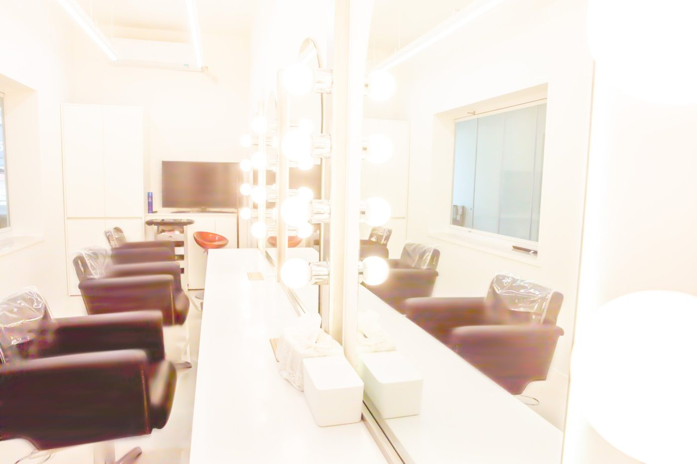

사진은 조명을 받으면 화장이 실제보다 옅게 나옵니다. 그래서 촬영장과 같은 조명 아래에서 화장하시도록 자리를 두었습니다.
긴 화장대를 따라 거울이 일렬로 붙어 있고, 거울 양옆에는 전구가 달려 있습니다. 앉으신 자리에서 머리부터 정리하고, 거울 앞에서 한 번 카메라 앞에서 한 번 확인합니다.
어머니와 딸이 나란히 앉아 머리를 정리하는 시간도 촬영의 일부입니다. 사진이 잘 나오는 비결은 카메라보다 이 과정에 있습니다.
옷을 갈아입고 메이크업을 고친 뒤에도 촬영장까지 이동이 짧습니다. 준비한 모습이 흐트러지기 전에 촬영이 시작됩니다.